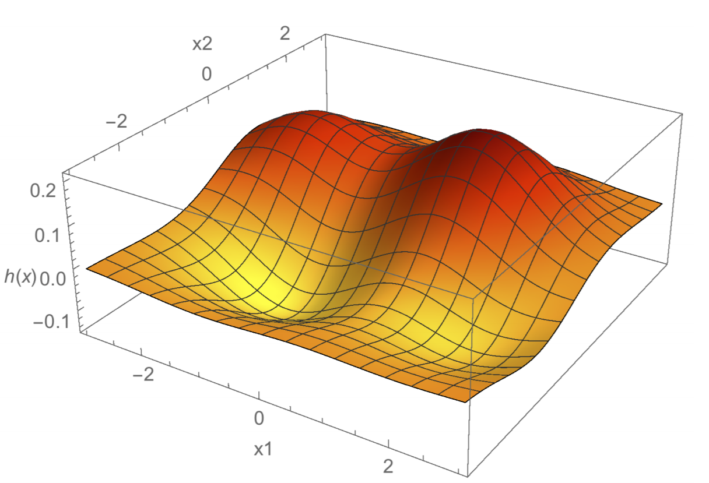

Kernels¶
One of the tasks we’re now familiar with is feature engineering: we transform raw data into feature vectors through a feature map. This process can take a long ass time, especially if we decide to have a ton of features. The kernel trick, or kernelization, can make things so we don’t need our feature map, but just a similarity map between datapoints.
Say we have a dataset with \(d\) features and we want to fit a degree-\(p\) polynomial decision boundary to them. Of course, overfitting is always an issue here. But we will also be using way more features- specifically, \(O(d^p)\) features for a degree-\(p\) polynomial with \(d\) features in our dataset! For example, if we have \(d = 100\) features and want to fit a degree \(p = 4\) decision function- each lifted feature vector needs to account for all combinations of features, and thus will have about four million features. Not good.
With kernelization, we’ll find we can still compute this feature vector incredibly fast; we don’t need to compute all features explicitly to use them.
Kernelization is based on two observations about many learning algorithms.
The optimal solution for an optomization problem can often be written as a linear combination of the sample points. We see this in a lot of algorithms: SVMs, ridge regression, perceptrons, logistic regression, etc.
We can denote optimal solutions as inner products of lifted feature vectors. For a sample point \(x\), lifted feature vector is denoted as \(\Phi(x)\). Many optomization algorithms only require computation of the inner product of few \(\Phi(x)\) vectors as their central computation. Often we don’t need to compute \(\Phi(x)\) to find their inner product!
Let’s take a mathematical look into observation 1. Let’s suppose optimal weight vector \(w\) (could be many) takes the form:
\(w = X^Ta = \sum_{i=1}^{n}a_iX_i\)
where \(X\) is our design matrix, and \(a\) is our coefficient vector that indicates the optimal linear combination of sample points. If we assume this, we can instead the optimal \(a\) instead of \(w\). In practice, we simply substitute \(w = X^Ta\) into our algorithm and solve for \(a\). \(a\)’s weights are called dual weights. So now, our goal is to find \(n\) optimal dual weights for \(a\) instead of \(d+1\) (or \(d^p\)) optimal primal weights for \(w\).
Let’s do this for ridge regression as an example. Before we dualize the ridge regression equation, though, there’s one small detail we need to take care of first. In this case, we do want to penalize the bias term because we’re finding a linear combination of the sample points- this is only true IF we penalize the bias term. To minimize damage from this, we first center \(X\) and \(y\) so their means are zero. Specifically, for each sample point (row) \(X_i\), subtract the mean \(\mu_X\). For each \(y_i\), subtract by \(\mu_y\). Don’t center the bias column, though: a 0s column will not be useful.
With centered \(X\) and \(y\), it’s less harmful to penalize our bias term. So in the ridge regression equation, instead of \(I'\) where the last diagonal element of \(I'\) was 0, we can just use the identity matrix \(I\) in our normal equations. Recall our normal equations for the standard primal form of ridge regression:
\((X^TX + \lambda I)w = X^Ty\)
Why does centering help? If we have data from a random distribution, then the expected linear regression will pass through the origin. So centering \(X,y\) will have the decision boundary likely to pass through the origin or close to it.
Let’s now look at the normal equations for the dual form of ridge regression, which we can obtain from above via substitution. Suppose we have a vector \(a\) which is a solution to:
\((XX^T+\lambda I)a = y\)
Then, \(X^Ty = X^TXX^Ta + \lambda X^Ta = (X^TX+\lambda I)X^T a\). Therefore, \(w = X^Ta\) is a solution to our normal equations, and \(w\) is a linear combination of points in \(X\).
So we call \(a\) the dual solution. It solves the dual form of ridge regression and we want to find \(a\) that minimizes
\(||XX^Ta-y||^2+\lambda||X^Ta||^2\)
We got this objective function by simply plugging in \(w = X^Ta\) into the original cost function for ridge regression. We can easily verify \(a\) by taking the gradient of this function and solving for \(a\).
For the training part of dual ridge regression, we first solve the dual normal equations for \(a\). Since we know \((XX^T+\lambda I)\) is symmetric and positive definite, it has a unique solution. For testing, our regression function on test point \(z\) is \(h(z) = w^Tz = a^TXz\). Note that \(a^TXz\) is also a linear combination, or weighted sum, of inner products:
\(a^TXz = \sum_{i=1}^{n}a_iX_i^Tz\)
So our hypothesis is a weighted sum of inner products. The inner product \(X_i^Tz\) is an inner product here that will be very important for what we want to do later.
Now that we have a good understanding of dual ridge regression, let’s define a little terminology.
First, let us define the kernel function \(k(x,z) = x^Tz\): simply the dot product of its input vectors. Later, we’ll replace \(x, z\) with \(\Phi(x), \Phi(z)\), but we’re not there yet.
Now, define kernel matrix \(K = XX^T\), where \(K\) is an \(n \times n\) matrix. Note that \(X\) does have the bias dimension. Here, we can see that \(K_{ij} = k(X_i, X_j)\). \(K\) is always positive semidefinite, but not necessarily positive definite. It is quite common for \(K\) to be singular, and this is quite common if \(n > d+1\)- and singularity can even happen even when this is not the case. If \(K\) is singular, don’t expect a solution to dual ridge regression if \(\lambda = 0\) (no regularization). This means we probably want some regularization- and this is good anyway to reduce overfitting.
Kernelization and kernel algorithms is most interesting when \(d\) is very large, since our lifting map adds a lot of new features anyway. So the \(n > d+1\) isn’t something too worrisome.
Now let’s write out the dual ridge regression algorithm in a manner that uses the kernel matrix \(K\) and kernel function \(k\).
Algorithm 7 (Dual Ridge Regression, Kernelized)
Calculate kernel matrix \(K\) where \(K_{ij} = k(X_i, X_j)\).
Solve dual ridge regression equation \((K + \lambda I)a = y\) for dual weights vector \(a\).
For each test point \(z\)
Calculate prediction \(h(z) = \sum_{i=1}^{n}a_ik(X_i, z)\)
Let’s calculate the runtime of our dual algorithm. First, in calculating \(K\), we calculate \(n^2\) entries as \(k(X_i, X_j)\). Each calculation of \(k(X_i, X_j)\) is the dot product which has \(O(d)\) runtime, so computing \(K\) is \(O(n^2d)\). Then, solving our \(n \times n\) linear system of equations generally takes \(O(n^3)\) time. Finally, for each test point, we compute \(h(z)\), which takes \(O(nd)\) time. So overall, since we’re considering \(d >> n\), __the dual algorithm takes \(O(n^2d + n^3)\) time. __
Now, we’re going to work some magic to make our kernel function \(k\) supremely fast.
Note our dual algorithm does not use sample points \(X_i\) directly. It is only used as an input to our kernel function \(k\). So this means if we can configure our kernel function \(k\) to avoid using \(X_i\)’s value directly, this will be great for speed.
Now let’s compare the dual algorithm with the primal for ridge regression. In the dual, we solve an \(n \times n\) linear system, and in the primal, we solve a \(d \times d\) system. We don’t transpose in the primal, so \(n\) and \(d\) simply swap places- meaning the primal algorithm has a \(O(d^3 + d^2n)\) runtime.
This means that the choice between dual or primal depends on comparing \(d\) and \(n\). For raw runtime, we prefer dual when \(d > n\), and primal when \(d \leq n\). Practically, though, we’ll usually have way more sample points than features: \(n >> d\). However, with polynomial features and parabolic lifting, we’re actually gonna have way more features than we think. More importantly, adding polynomial terms as new features will blow up \(d\) in the primal algorithm runtime, but does not affect \(d\) in the dual runtime. So dual ridge regression is looking better and better here.
Finally, remember that dual and primal produce the same exact predictions. They are just different ways of doing the same computation.
The Magic: Kernelization¶
Now finally, the magic part. We can compute a polynomial kernel with many monomial terms without actually computing the individual terms itself.
The polynomial kernel of degree \(p\) is given as \(k(x,z) = (x^Tz + 1)^p\). Note that \(x^Tz + 1\) is a scalar, so taking it to a power is \(O(1)\) time.
A theorem: \((x^Tz + 1)^p = \Phi(x)^T\Phi(z)\) where \(\Phi(x)\) contains every monomial in \(x\) of degree \(p\) (degree 0 to p). For example, let’s say we have \(d=2\) features, and want a degree \(p=2\) polynomial. Let’s assume \(x, z \in R^2\). Then,
\(k(x,z) = (x^Tz + 1)^2 = x_1^2z_1^2 + x_2^2z_2^2 + 2x_1z_1x_2z_2 + 2x_1z_1 + 2x_2z_2 + 1\).
We can factor this into an inner product of two vectors, one with \(x\) terms and one with \(z\) terms:
\(= \begin{bmatrix}x_1^2 & x_2^2 & \sqrt{2}x_1x_2 & \sqrt{2}x_1 & \sqrt{2}x_2 1\end{bmatrix} * \begin{bmatrix}z_1^2 & z_2^2 & \sqrt{2}z_1z_2 & \sqrt{2}z_1 & \sqrt{2}z_2 1\end{bmatrix}^T\)
Now define \(\Phi(x)\) and \(\Phi(z)\) as these two respective vectors. Which means we can finally compute \(k(x,z) = \Phi(x)^T\Phi(z)\) like we dreamed of, and calculate it as a single expression \((x^Tz + 1)^p\) instead of actually computing \(\Phi(x)\) or \(\Phi(z)\) themselves! It’ll take \(O(d)\) runtime instead of \(O(d^p)\) time (by calculating \(d^p\) terms in \(\Phi(x)\)).
Now, applying kernelization to ridge regression, the important thing to understand: we take our dual and replace \(X_i\) with \(\Phi(X_i)\). Now, our kernel function is \(k(x,z) = \Phi(x)^T\Phi(z)\). But we aren’t computing \(\Phi(x)\) or \(\Phi(z)\) and taking their inner product. We are computing \((x^Tz + 1)^p\), which is equivalent.
Kernel Perceptrons¶
So how can we apply kernelization to ML algorithms? Let’s look at an example with perceptrons. The perceptron algorithm will stay the same as before, except we replace \(X_i\) with \(\Phi(X_i)\):
Algorithm 8 (Kernelized Perceptron, Primal)
Pick some starting point, e.g. \(w = y_1\Phi(X_1)\)
Training. While some \(y_i \Phi(X_i) \cdot w < 0\) (there exists a misclassified point):
\(w \leftarrow w + \epsilon y_i \Phi(X_i)\)
Testing. For each test point \(z\):
\(h(z) \leftarrow w \cdot \Phi(z)\)
How do we convert this algorithm to its dual form?
First, we want a lifted design matrix \(\Phi(X)\), which is an \(n \times D\) matrix where \(D\) is the number of features after lifting. Each row \(\Phi(X_i)^T\) is a lifted sample point.
Next, we define a kernel matrix \(K = \Phi(X) \Phi(X)^T\). Note it is applied on lifted features, not raw features.
Next, we substitute \(w = \Phi(X)^Ta\), noting that our optimal solution is simply a linear combination of lifted sample points. We solve for \(a\).
So in the primal algorithm’s training phase, in step 2.1, we use stochastic gradient descent to find an optimal \(w\). In the dual algorithm, we update each weight in \(a\) individually as follows:
This has the same effect as \(w \leftarrow w + \epsilon y_i \Phi(X_i)\) in the primal. We can verify this by simply substituting \(w = \Phi(X)^Ta\) into the primal update.
Also note that \(\Phi(X_i) \cdot w = (\Phi(X) \cdot w)_i = (\Phi(X) \Phi(X)^T a)_i = (Ka)_i\).
Finally, we can set up our dual algorithm:
Algorithm 9 (Kernelized Perceptron, Dual)
Get a starting point \(a\), e.g. \(a = \begin{bmatrix}y_1 & 0 & ... & 0 \end{bmatrix}^T\)
Compute kernel matrix \(K\)
Training: While some \(y_i(Ka)_i < 0\):
$a_i \leftarrow a_i + \epsilon y_i
Testing: For each test point \(z\):
\(h(z) \leftarrow \sum_{i=1}^{n}a_ik(X_i, z)\)
Let’s go over runtime again. Like always, computing the kernel matrix \(K\) takes \(O(n^2d)\) time. Note \(d\) is the number of pre-lifted (raw) features. Updating \(a_i\) takes \(O(1)\) time, but updating \((Ka)_i\) at every iteration takes \(O(n)\) time. Finally, computing test point predictions for \(n\) points takes \(O(nd)\) time.
Kernelized Logistic Regression¶
Kernelization is very common in logistic regression, and we’ll find that we’ve already done most of the work in previous sections! The key differences just deal with the characteristics of logistic regression itself:
Instead of searching for a misclassified sample point each iteration, we apply GD to all points at once, or random sample points.
The stochastic gradient step changes to account for logistic regression: it is now \(a_i \leftarrow a_i + \epsilon(y_i - s((Ka)_i))\), where \(s\) is the logistic function.
Our starting weights vector is \(0\).
Just like with perceptrons, every training iteration, we update a single dual weight \(a_i\), and then update \(Ka\) in \(O(n)\) time. This way, we don’t have to compute \(Ka\) from scratch on the next iteration.
What if we want batch gradient descent instead? All we have to change here is now apply \(s\) element-wise to a vector, specifically vector \(Ka\). So our update rule is \(a \leftarrow a + \epsilon(y-s(Ka))\). And for test predictions, we simply apply the sigmoid function on our weighted sample point sum: \(h(z) = s(\sum_{i=1}^{n}a_ik(X_i, z))\). Note this is purely for knowledge of posterior probabilities; if we just want the classifier prediction, we don’t really need the sigmoid function in any case, and can just take the weighted sum as usual.
Gaussian Kernel¶
So we’ve learned how to do fast computation in extremely high dimensions. So one day some crackhead decided to expand on this and ask: if we can work with high-dimensional feature vectors, what about feature vectors in infinite-dimensional space?
The Gaussian kernel is denoted by
Note that \(-\frac{||x-z||^2}{2\sigma^2}\) is the exponential part of the Gaussian PDF. Computing this kernel term takes \(O(d)\) time, as usual. Again, this kernel is the inner product of lifted feature vectors \(\Phi(x) \cdot \Phi(z)\), where \(\Phi\) now has infinite dimensions.
Let’s consider the case when \(d=1\). In this case, our lifted feature vector is
Again, we don’t actually compute this: instead, we are computing the kernel function \(k(.,.)\).
Now the hypothesis function for infinite-dimension lifts would be \(h(z) = \sum_{i=1}^{n}a_ik(X_i, z)\), which is a linear combination of Gaussians. Each Gaussian is centered at a sample point \(X_i\). Let’s visualize this as a 3D plot of \(h(z)\):
{kind=link}
Here we see a linear combination of four Gaussians. The 2 humps are Gaussians with positive coefficients \(a_i\), while the 2 troughs are Gaussians with negative coefficients. Gaussian-kernel ridge regression will output this kind of regression function.
The Gaussian kernel is very popular in practice. Why? There are many reasons:
Smooth regression function \(h\): in fact, \(h\) is infinitely differentiable.
Behaves similar to k-nearest-neighbors. Sample points \(X_i\) closer to a test point \(z\) have a much greater influence than sample points further away. This is, of course, indicated by the kernel function. Fortunately, unlike k-NN, the Gaussian kernel tends to give much smoother decision boundaries.
Decision boundaries oscillate much less than high-degree polynomials, depending on Gaussian width hyperparameter \(\sigma\).
\(k(x,z)\) is interpreted as a similarity function. Thus, \(k\) is maximized when \(x = z\), but fades to 0 as the distance between \(x, z\) increases.
The hyperparameter \(\sigma\) represents Gaussian width. Like all hyperparameters, we choose \(\sigma\) by validation. With larger \(\sigma\), we have wider Gaussians, which means \(h\) is smoother, which increases bias but decreases variance.